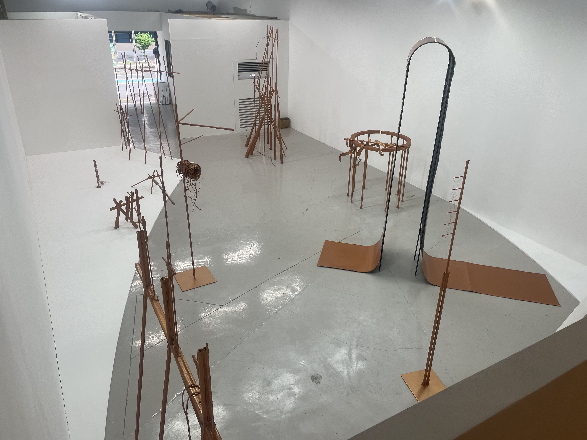

힘의 속살, 벗긴 풍경
<《Fence-go-round》는 작가 최리아가 2021년부터 만들어온 종이 펜스 조각을 소개하는, 그의 첫 번째 개인전이다. 전시를 이루는 여러 작품은 커스텀 된 종이를 주축으로, 다양한 질료의 관과 나뭇가지, 철사와 접착제 등의 물질 재료로 이루어져 있다. 《Fence-go-round》에서 이 덩어리들은 작가의 지휘하에 구부러진 종이에서부터 울타리와 같은 구조물의 형상을 다채롭게 오간다. 또한 조각과 설치라는 매체 사이의 경계선을 아슬아슬 드나든다.
전시의 입구. 오른쪽에는 구리색을 띠는 선형 구조물 6점이 벽에 기대어 나열해 있고, 왼쪽에는 한 점의 은색 구조물이 정사각형 받침대를 딛고 서 있다. 하나의 군과 한 점의 구조물은 - 커스텀 된 종이라는 최소 단위에서부터 현재의 형으로 조직되기까지 - 그 제작 방식이 겉보기에는 크게 다르지 않았다. 하지만 본 전시에서 오른쪽에 놓인 6점의 <펜스 유닛>은 설치의 역할을, 왼쪽에 놓인 <매듭>은 조각의 역할을 부여받는다.
<매듭>은 《Fence-go-round》의 모든 출품작에 대한 비교군이자 참조점으로 설정된 작품이다. 우리 모두 함께 주방에서 국Soup를 만드는 상황을 떠올려 보자. 모든 재료가 들어갔지만, 간을 봤을 때 싱거운 국에 소금을 넣으면 국의 전체적인 맛이 끌어올려지듯이, 여타 구리색 작품들과 달리 홀로 은색을 띠는 <매듭>은 관객의 눈이 구리색에 순응할 시점에 환기하며 작품의 색을 또렷하게 만들고, 전시의 출입구에서 또 다른 상상의 갈래를 연다. (만약 본 전시의 모든 작품이 구리색이 아니라 은색으로 만들어졌다면, 《Fence-go-round》가 배태할 리얼리티의 내용과 감수성은 지금과 전혀 다른 것이 되지 않았겠는가.)
한 가지 더. 사물의 외형과 그 제작 원리 사이의 이격을 통해 환상적 효과(“종이 펜스는 딱딱한 금속 펜스를 우스꽝스러운 포즈로 흉내 낸다.”1)를 획득하는 유형의 작품을 볼 때 유심하게 살필 수 있는 작가의 선택으로는 그 공공연한 비밀을 전시 감상의 타임라인 속에서 언제, 어떻게 흘릴지에 관한 시퀀스 편집이 있다. 이 관점에서 <매듭>은 자신이 종이로 감싸 만들어진 선재라는 사실을 숨길 마음이 없어 보였다. 종이 끝부분까지 바싹 접착시킨다거나 접착제(‘글루’)로 종이 선을 감추는 선택을 작가는 하지 않았고, 종이 펜스 조각의 비밀을 초장부터 물질로써 노출하며 전시를 연다.
또한 그 뒤에 하얀색 가벽을 추가로 설치함으로써, 은색과 크게 구별되지 않는 바닥색으로부터 <매듭>의 존재감을 확보하고자 했다. (조각을 받쳐 그것의 사방을 잘 볼 수 있도록 하는 것이 좌대의 역할이라는 점을 고려해 봤을 때, 이 가벽을 하나의 좌대로 간주하는 것은 과연 비약일까?)
<규칙>, 2022, 커스텀 된 종이, 지관 (중)
<펜스들>, 2023, 커스텀 된 종이, 철관 (우)
<매듭> 뒤에 놓인 가벽은 전시의 본 공간으로 들어서는 입구의 면적을 줄이기도 한다. 그럼으로써 관객의 동선을 조율하며 그 뒤에 펼쳐지는 길이 두 갈래라는 점을 부각하는 것처럼도 느껴졌다. 이와 마찬가지로, 《Fence-go-round》에서 관객의 동선을 조율하는 요소로는 전시장의 두 모서리와 하나의 호로 이루어진, 원형 좌대가 있다. 바닥에 놓인 이 하얀색 널판을 처음 봤을 때 나는 이 널판이 전시를 이루는 설치의 일부분이라 여겨 당연히 밟아도 되는 줄 알았다. 하지만 관객인 내가 본 공간에 들어서자, 야생의 작가가 출현해 바닥에 놓인 하얀색 판은 조각을 올려놓는 좌대이니 그 안으로 들어서지 않을 것을 권했다.
이렇게 낮은 좌대는 태어나서 이날 처음 봤다. 그렇지만 좌대를 기준으로 리플렛을 다시 보니 ‘설치’로 간주하는 <펜스 유닛>과 <기둥>은 좌대 바깥에 놓여 있고, 좌대 위에 올려진 8점의 작품은 모두 저마다의 이름을 가지고 있었다. 《Fence-go-round》라는 질서 내에서 ‘좌대 위 piece들은 조각으로 간주한다’라는 작가의 문법이 눈에 들어오기 시작하는 동시에 최리아에게 조각과 설치의 경계는 어떤 기준으로 이루어지는 것인지 궁금증이 들었다. 가령 <펜스들>과 <펜스 유닛>를 구분 짓는 차이가 매체를 가를 정도로 커 보이지는 않았기 때문이다. (<펜스들>은 네 점의 <펜스 유닛>을 엇갈려 놓아 중심을 잡고, 보다 짧은 선재로 그 네 점을 횡으로 고정해 만들어진 것처럼 보였다.)
아리송한 기분으로, 전시를 계속 보기 시작했다.
사진: @binzip
사진: 고정균
‘종이 펜스 조각’을 소개하는 전시인 만큼 총 27점의 작품 중 16여 점의 작품이 펜스 모양을 하고 있었다. (왜 한글로 ‘울타리’라고 하지 않고 ‘펜스’라고 표기하는 걸까?) 펜스라는 심상을 중심 삼아 그것을 이중으로 올려 보기도 하고(<이중펜스>), 조각의 몸을 지지하는 규칙을 다르게 설정해 보기도 하며(<규칙>), 바람이 불어 무너진 듯한 모습(<펜스-기댄>)을 그려 보는 등의 시도들이 보였다. 관객인 나 역시 그런 펜스의 심상을 떠올리며 감상하다, 2층에서 <펜스-휜>을 보는 순간 그간 내 안에서 쌓아온 펜스의 심상에 큰 변동이 일어나는 것을 느꼈다.
<펜스-휜>을 횡으로 가르는 펜스 유닛의 비어 있는 속을 발견했을 때였다. ‘아 이것들 다 텅텅 비어 있구나’하는 생각이 1, 2층에서 봤던 모든 작품의 속이 텅 비어 있을 거란 짐작으로 이어졌고, 이는 곧 전시를 이루는 모든 작품의 중량이 확 낮게 느껴지는, 감각 변동으로 이어졌다. 우리 주변을 이루는 모든 경계가 다소 허상적이라는 교훈적 내용으로 이어질 수도 있는 대목이었다. ‘기둥’이라는 이름을 갖고 있지만 2층의 하중을 떠받칠만한 내구도가 없는 세 점의 <기둥>이 그렇듯이 말이다.
사진: 고정균
울타리가 아닌 것을 원형으로 두고 만든 듯한 작품도 여럿 있었다. 본 전시를 이루는 작품들은 펜스의 형상을 기준으로 두고 만들어졌지만, ‘커스텀 된 종이’라는 재료가 그 이외의 모양을 기준으로 제작된다면 어떤 모습을 갖출지의 가능성을 실제로 확인할 수 있는 갈림길들이었다.
그 중 <묶인>은, 제목이 형용사로만 이루어진 유일한 작품으로, 여타 작품처럼 특정한 형상에 발을 걸쳐 놓지는 않는다. 하지만 작가가 그간 사용해 온 관, 나뭇가지, 밧줄, 철사, 종이, 글루가 총동원해 풍성한 세부를 보는 재미가 있다. 흡사 ‘한 작품 내에서의 밀도를 어느 만큼 올릴 수 있는가?’라는 과제를 스스로 부여하고 해결해 나간 결과물처럼 보였다. 이 밀도를 유지한 채 크기를 키울 수 있다면 과연 어떤 결과물이 만들어지게 될까? (누가 커미션해줬으면 좋겠다.)
또 달리 기억에 남은 작품은 <가드레일 1>이다. 가드레일은 도로 양옆으로 설치돼 차량과 1인용 이동 수단, 보도자 등의 이동 범위를 제한하는 기물이다. 최리아가 만든 <가드레일 1>은 그 안에 사람 한 명이 들어가면 제자리로 한 바퀴 돌 수 없을 정도로 비좁았다. “울타리를 돌고 돌기를 되풀이하며 내부 공간에 점점 익숙해지면 울타리의 둘레는 곧 말의 세계의 크기이자 부피가 된다.”2는 문장을 떠올려 본다면, 그것이 무엇을 무엇으로부터 구분 짓고 지키기 위해 고안된 것인지는 모르겠지만 내가 보기에 그 안은 1인용 수용소보다 좁아 보였다.
다른 사람과 인간관계를 이어가다 보면, 좋을 때 있고 싸울 때 있고 나 혼자만 격렬해지기도 하듯이, 작가가 재료와 함께 4년이란 적잖은 시간을 보내며 떠올린 충실함을 작품의 다종다양한 모습에서 볼 수 있었다. 미술은 작가의 리얼리티를 매개하는 물질의 목소리를 소중히 여기는 장르라는 사실이 새삼스레 기억나면서, 본 전시에서 일부 선보인 물질적 사고력이 다음 기회에는 또 어떻게 발휘될까 기대도 되고 말이다.

끝으로는 공간 이야기.
'종이 펜스 조각'은 말을 길들이는 울타리인 원형 마장에서 출발했다. 원형 마장은 경마나 승마 훈련을 위해 만들어진 공간인 (경)마장의 한 종류로, 그 목표를 가장 효율적으로 이루기 위해 원형 구조가 적용된 개정판이다. (계속해서 달리는 말의 주행 거리를 감당할 공간을 짓는 가장 쉬운 방법 -> 말의 주행 방향을 직진에서 회전으로 제한한다.) 하나의 커다란 직사각형이기도 한 Hall 1과 종이 펜스 조각의 거리를 좁히기 위해 (이누리 공간 디자이너와 최리아 작가가) 채택한 디자인 요소는 크게 두 가지다. 입구에 들어서면 정면으로 보이는 구리색 벽면과 높이 18mm의 원형 좌대.
원형 좌대의 곡선은 1층 전시장에서 관객의 동선을 깎는다.
관객의 발길은 원형 마장을 무한히 도는 경주마처럼 제한된다.
청동제 놀이공원을 닮은 전시장은 구리색 광채로 은신한 감옥이다.
계단 위 2층 전시장은 감옥의 구조를 관망할 수 있는 시야를 제안한다.
그와 동시에 작품 <행거>와 구리색 벽면이 겹쳐 있는 듯한 착시도 제공한다.
동시대의 권력은 형상形象하지 않는다. 플랫폼을 통해 (불평등한) 교환이 새로운 폭력으로, 내면으로 자리 잡은 지금 시대3에 사물에 스민 권력을 까뒤집어 만든 민낯의 질감을, 최리아는 구리색 종이로 물질화했다. 껌껌하고 까칠까칠한 나무껍질 속에는 그와 전혀 다른 살구색과 수분감의 속살이 자리하고 있듯이 은유로서의 놀이공원이 망하고 그 공간을 이루는 여러 기물이 까뒤집어졌을 때, 우리 앞에 펼쳐질 현실의 광경은 마치 《Fence-go-round》스러울 것이다.
행동과 그 결과, 노력과 그 성과 사이에 외적인 의지가 개입되는 한, 인간은 노예다.
오늘날의 노예 그리고 주인 모두 그렇다. 인간은 자기 자신의 행동의 조건들을 절대 직접 마주하지 않는다. 사회라는 장막이 자연과 인간 사이를 가로막는다.
- 시몬 베유, 『중력과 은총』 中
- 하상현, 서문, 《Fence-go-round》 리플렛
- 하상현, 서문, 《Fence-go-round》 리플렛
- 작가의 말